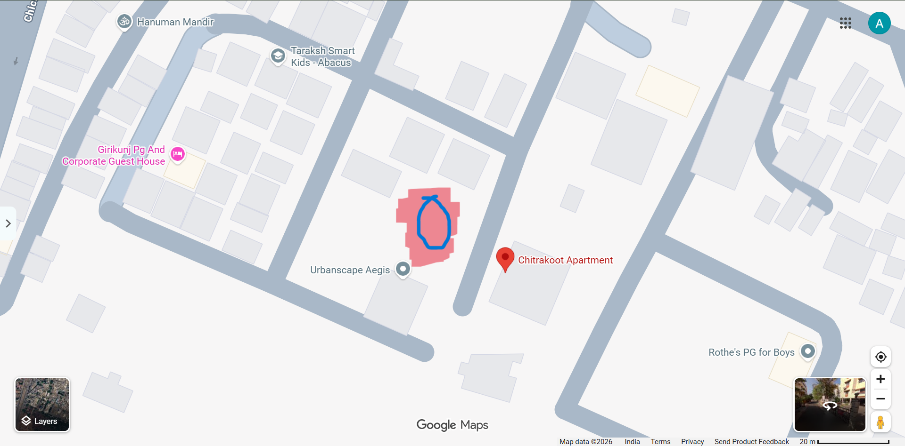
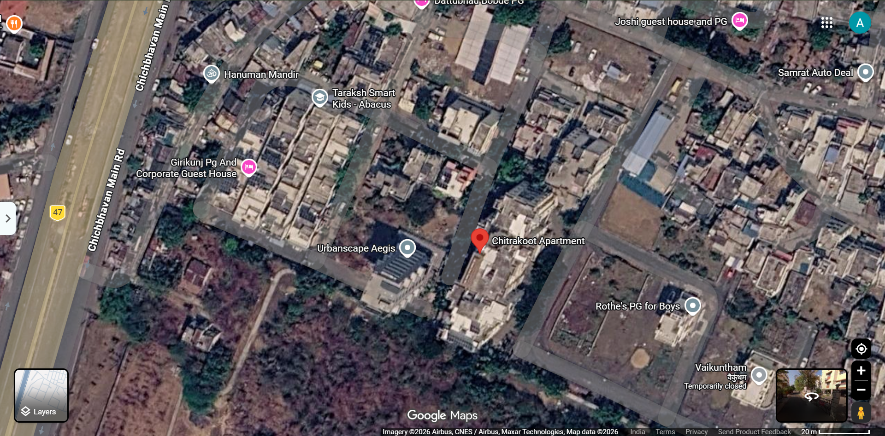
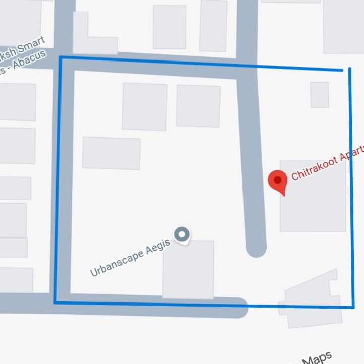
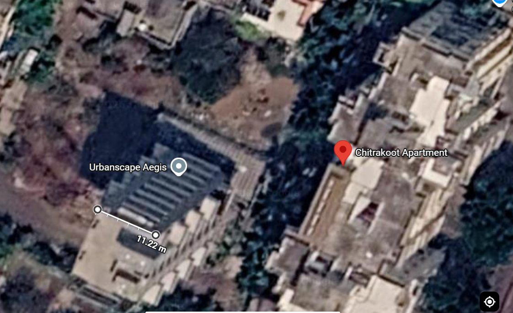
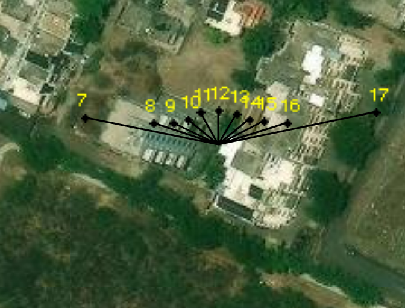
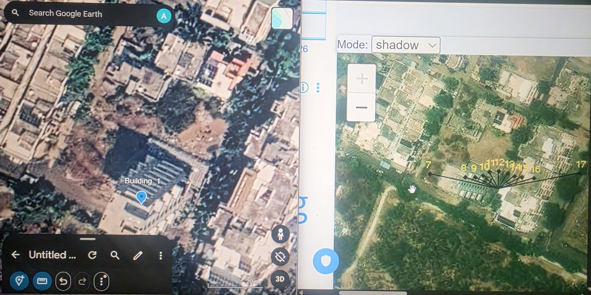
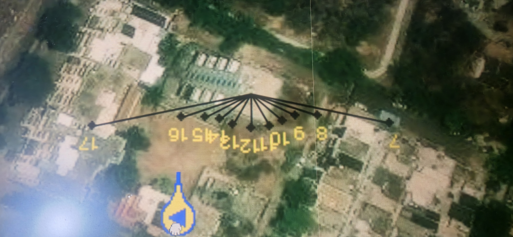
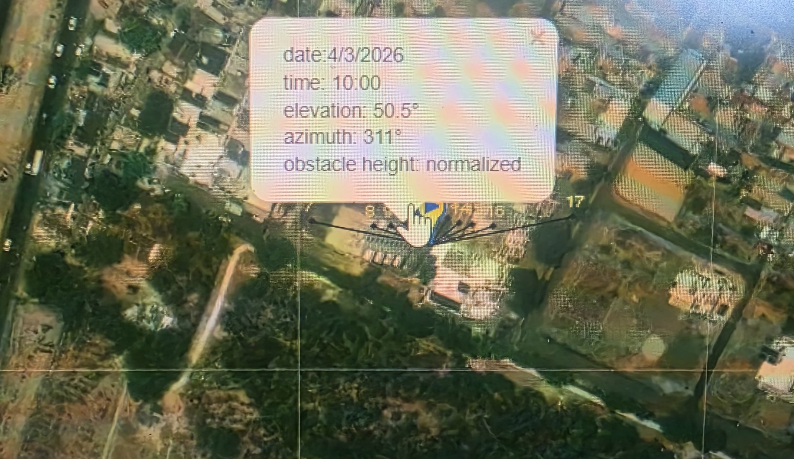
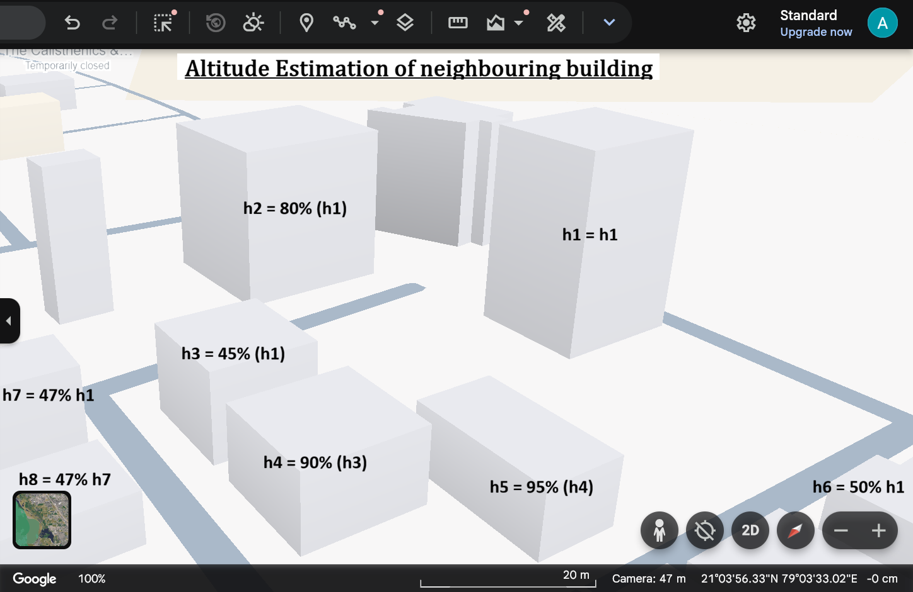
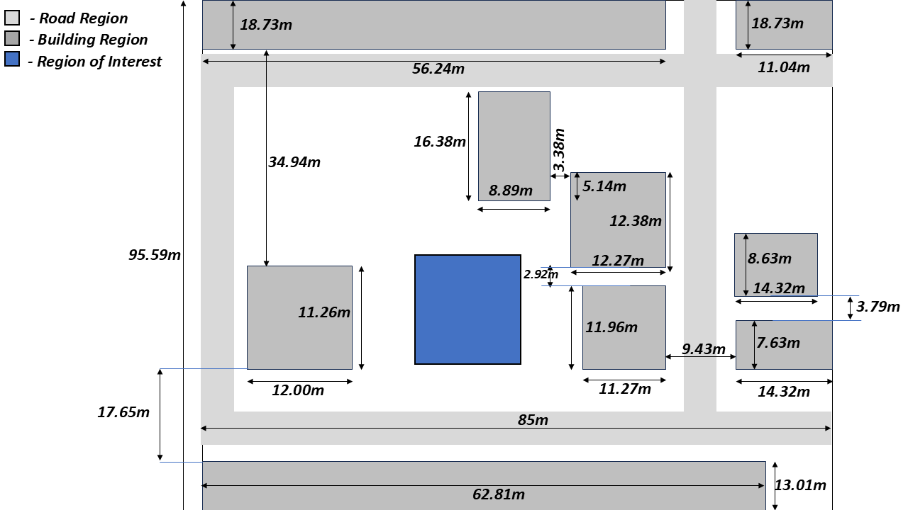

1.1 Inflow Boundary Condition on the Colony
Modelling the Domain
The image given below is obtained from the maps of the plot that needs to be modelled.


Just by looking at the image one could get a good estimate of how the building should be modelled. With the scales known, this could be accruately mapped and the grid can then be used to simulate. Another question is to what extend should we expand the domain for our study. During the discussion with Nikhil about three to four days ago, we came to a conclusion that the region shown below (inside the box with blue borders) is what we will be considering for our study.

Now it turns out that assuming the houses and buildings to be 2D plots, is one of the worst way to simulate the flow. I will have to use 3D plots. And for that I will have to model the building as cuboids.
Now using google Earth one can also get the 3D models of all the building on the 2D maps. But it turns out it provides Models of some selected building. Possibliy ones in large urban cities. The colony that we are interested in is noy one of them. So i thuohgt to do the following. I will note down the tiem at whcih image was taken, and the cordinates of each building that i am interested in from Google Earth Desktop App. Then I will use sunearthtools.com to get the elevation angle of sun from the data obtained from Google Earth. And then with the Elevation angle and Lenght of shoadows of each building (again obtained from Google Earth), and some simple trigonometry, I can estmate the height of the buildings. So the following section discusses about each of them.
The belwo image shows how I estimated the time at which this image must be taken. The first image is from the google earths. And the second image is from sunearthtool. And the lines in thrid shadow is directino in which shoadow of the sun will be pointing at different time. From google earth I got to know that the image was taken on 4th March 2026,and the shadows at different point of time is on the same day.



Comparing the image i see that the shadow in the image is pointing to the shaow line close to 10:00AM. It also shows the Sun's Elevation angle to be equal to nearly 50.5 degrees.


Now that we know the elevation angle of sun in map of Google earth, we can measure the shadow lengths of each building one by one and with that we could get the height of the buildings. But the problem is that except one building, every other building has unclaer shadows. Going into Google Earth, i was able to get to the 3D model of all the building, but I still struggled to find ttheir heights. So here is what I have decided. I will calculate the height of the clearest building. And then I will make a very crude estimation of the height of other building relative to this clear one. And likewise calculate height of all the buildings.
Then the next thing was to calculate the lenghts and breaths of building, which wasnt very difficult, and I was able to do that from google earth itself. With Elevation angle equal to e = 50.5 degrees (which is 0.88139 radians), and lenght of the shadow l = is 25.5m from the image. With this, height of the building h1 = l * tan(e) = 30.933m. And this will be used to estimate the heights of all the other buildings

| Building | Heigth |
|---|---|
| h1 | 30.933m |
| h2 | 24.7664m |
| h3 | 13.9198m |
| h4 | 12.5278m |
| h5 | 11.9014m |
| h6 | 15.4665m |
| h7 | 14.5385m |
| h8 | 12.5278m |

With this I could successfully model the domain in software before starting the simulation.
1.2 Modelling the Inflow Boundary Condition
I would now like to get the direction and maginitude of wind in this region, because this will act as inflow boundary condition, and is absoultely neccessary part of the solver. Thunking about the task, let me be very clear about what i want. There are three season in consideration. Summer, Winter and Monsoon. And there are also directions of the wind everyday . Let me first see how much fluctuations we have in the magnitude and direction of winds before expressing my interest in what way I want to capture the wind data, after analysing.
So given below are the CSV files I got from the website: power.larc.nasa.gov. This was an amazing website. I have taken the direction and magnitude of winds, at height equal to 10m and 50m. Hourly data is taken from each from 1st Jan 2020 to 31st Dec 2025. And the files afre provided here (2020 , 2021 , 2022 , 2023 , 2024 , 2025). With this data, I would first make an animation of wind vector with time for all this time.
The csv file given above, have Wind Speeds at 10m altitude, Wind Speed at 50m altitude, Wind DIrectino at 10m altitude, and finally Wind Direction at 50m altitude. Wind travels with larger speeds at higher altitudes. And this is because with larger altitudes, the friction experienced by fluid due to ground, is lower. I will surely consider having a non uniform speed profile in Z (height). And it goes by the Power law that I will discuss later. But here i am making an assumption that direction of wind is constant with height from 0 to 10 to 50m altitude. The expression for power law for wind profile is given below:
With the data of wind at 50m and the image where I obtained measurmetn sof lenght and breath of all the buildings from google earth, i can make a quick decision that the size of domain will be ( L X W X H ) = ( 95.59m * 70.45m * 50m ). And now give below is the code and the animation of wind profile from 2000 to 2025 at cordinates (Latitude: 21.07, Longitude: 79.06)